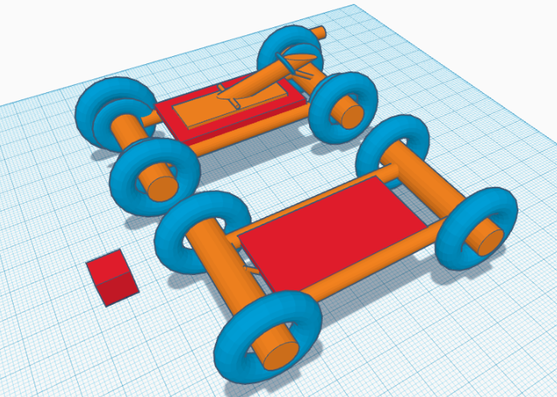

1/19/24 - This is my first journal entry!
in the past week, we've started a new project where we have to make a car. there was a choice between an arduino car and a mousetrap car and i chose the mousetrap one bc mechanical engineering is pretty cool. we also had a quiz which i think i did ok on. we also made oobleck or however its spelled but that was pretty fun.
1/26/24
- This is my second journal entry!this week, we worked a lot on our car project. i didnt get a lot done ngl because i was absent a lot. we just finished the tinkercad though so we are pretty on track.
